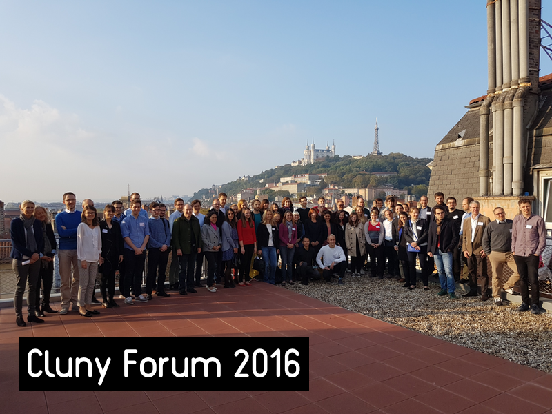
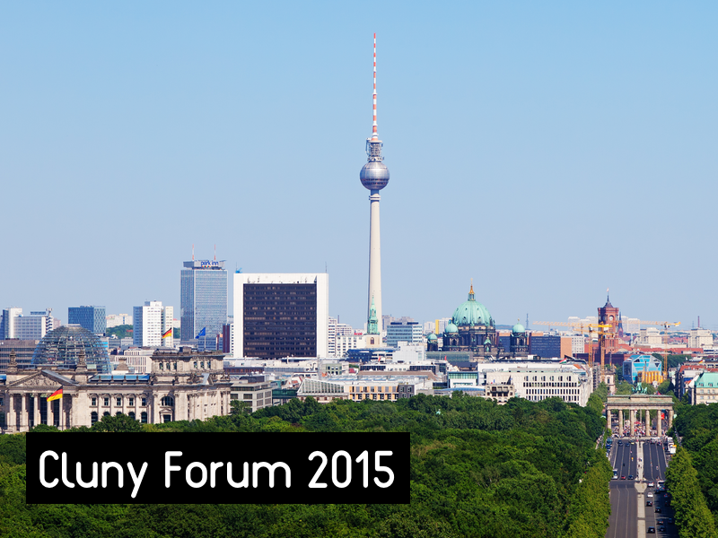
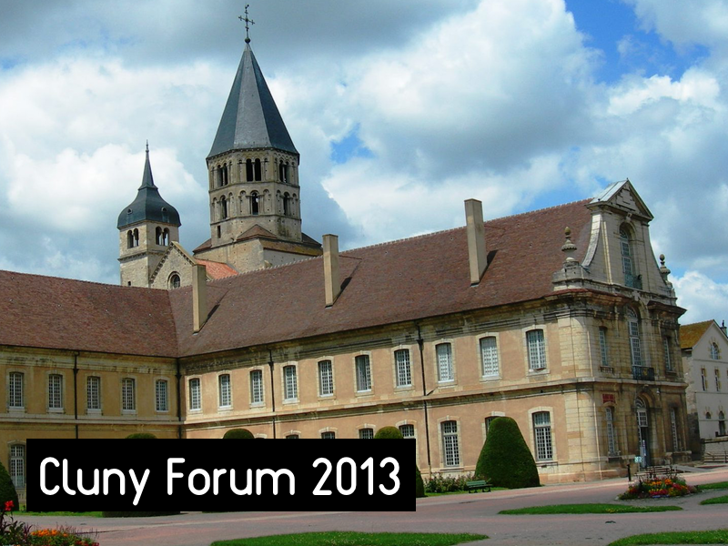

The history of the Cluny Forum is relatively young, with "only" two iterations, the first one in Cluny, France and the second one in Berlin, Germany. Nonetheless, with each iteration, the Trait d'Union Franco-Allemand tries to push the social and economic cooperation between France and Germany a bit further. The first Cluny Forum took place in Cluny, in the French region of Bourgogne, at the Centre de Conférences Internationales de Cluny. The city was chosen for its history linked to the European spirit, as well as to the questions of industry and energy we are all concerned with. The thinking of the first forum was that the periphery is where the innovation comes from, far from the centers that are Berlin and Paris. In 2015 then, the Cluny Forum was organised in Berlin, one of those centers. The second edition of the Cluny Forum met a lot of success with the development of interesting project that were conceived during the 2015 edition.
The next edition of the Cluny Forum in 2016 will be held in Lyon, France. Come join us and be a part of the future of French-German relationships!
|

Location: Lyon
|

Location: Berlin
|

Location: Cluny
|
|---|